Contents of page/chapter:
+Spatial Constraints Search
+Searching by Position in Batch Mode
+Searching by NAIF ID (Solar System Object)
+Precovery (Solar System Object)
+Searching the Whole Sky
+Proposal Constraints
+Observation Constraints
+Instrument Constraints
+Data Product Constraints
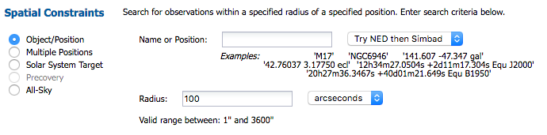
You may enter a target name, and have either NED-then-Simbad or Simbad-then-NED resolve the target name into coordinates (such as M17 or NGC6946). Alternatively, you may enter coordinates directly. These coordinates can be in decimal degrees or in hh:mm:ss dd:mm:ss format. By default, it assumes you are working in J2000 coordinates; you can also specify galactic, ecliptic, or B1950 coordinates as follows:
You specify the radius over which you want to search. You may enter this radius in arcseconds, arcminutes, or degrees; just change the pulldown option accordingly. Caution: pick your units from the pulldown first, and then enter a number; if you enter a number and then select from the pulldown, it will convert your number from the old units to the new units. There are both upper and lower limits to your search radius; it will tell you if you request something too big or too small.
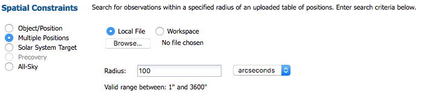
The file must be in IPAC table file  format, which is ASCII text with headers explaining
the type of data in each column, separated by vertical bars.
format, which is ASCII text with headers explaining
the type of data in each column, separated by vertical bars.
A sample input file looks like this:
| ra| dec| | double| double| | deg| deg| 266.461876096161 -28.9303475510113 317.385694084404 -41.1537816217576 267.210580557307 -27.7929408211594 229.172700517754 0.2598861324350 299.510225672473 -38.7735055243326 213.945501950887 13.3596597685085 262.341432853080 -23.7518928284717 271.202769466020 -21.7274227022229 291.167629785682 -29.2569222675305 272.336516119634 -20.2761650442889 237.391628608612 2.5906013137112
As for searching on targets one at a time, from the front screen, you specify the radius over which you want to search. You may enter this radius in arcseconds, arcminutes, or degrees; just change the pulldown option accordingly. Caution: pick your units from the pulldown first, and then enter a number; if you enter a number and then select from the pulldown, it will convert your number from the old units to the new units. There are both upper and lower limits to your search radius; it will tell you if you request something too big or too small.
For batch searches, if you want to use a different search radius for each target, add a column to the input table. If the table uploaded has a 'radius' column, the API will overwrite the single radius search and take the one specified in each row in the table.
So that you can more easily tie results to input, when you get results back from a batch search, the input RA and Dec are columns appended to the end of your results tables.
Troubleshooting and tips: Having problems making a
valid IPAC table? Assemble something close to the correct IPAC
table file format, then pass it through the the IPAC table validator  . The most common errors include the following :
. The most common errors include the following :
Please note that the maximum number of targets that can be requested in a batch search is 1000.
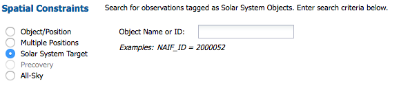
If you know the NAIF ID, just type that in; if you know only the name,
it will attempt to resolve the name for you into a NAIF ID. You may
need to carefully read what it is suggesting to make sure you have
selected the NAIF ID you really want. For example, Neptune's NAIF ID
is different than that for the Neptunian system's barycenter:
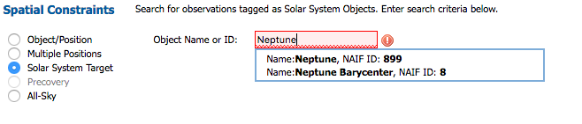
Even if only one suggestion is given, you need to explicitly select that suggestion in order to implement the search.
This search will retrieve data explicitly declared to be observations of these moving targets in the Spitzer database. This means, for example, that observations of a moving target performed as a fixed-target observation of an RA/Dec will not appear, nor will serendipitous observations of a moving target that happens to appear in a fixed-target observation. To find such observations, see the next section on "Precovery." Note also that if incorrect target information was entered at the telescope, observations may not be retrieved.
The search can be performed for comets or asteroids using the object name or the six orbital parameters supplied by the user either individually or in the Minor Planet Center (MPC) one-line element format.
What the system is doing is using IRSA's Moving Object Search Tool (MOST)  , taking the orbital ephemeris
(either searching for the ephemeris based on the name that you enter,
or taking the orbital information you give it), calculating where the
object was over the time range that you request (over the entire
mission if date constraints are left blank), identifying the
individual exposures in which it calculates that your object should be
present, and returning to you all those data.
, taking the orbital ephemeris
(either searching for the ephemeris based on the name that you enter,
or taking the orbital information you give it), calculating where the
object was over the time range that you request (over the entire
mission if date constraints are left blank), identifying the
individual exposures in which it calculates that your object should be
present, and returning to you all those data.
As a result, requests over long time baselines can take a long time. You can make a request that takes so much time that it times out, and you get no search results. In order to shorten search times, ask it to search over a smaller time baseline. The SOFIA data volume grows ever bigger, so searching the entire archive takes longer and longer.
Searching by object name :
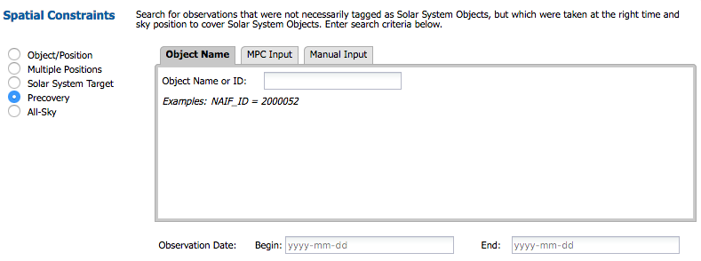
You can search by object names by entering the name in the
"Object Name" field. It looks up the NAIF ID for you; select the NAIF
ID corresponding to your object. The accepted naming conventions are
the ones that have been approved for use by the CSBN  and its predecessors. News
reports occasionally use unofficial or unapproved names; you cannot
use these names to access objects. For asteroid names, one can enter
either the ID number, name or designation, e.g. 2, 887, 1917, Pallas,
Alinda, Cuyo, 1981 QB, 1996 GQ, or 2010 CG18. It can also handle
names with apostrophes and dashes like O'Connell and Pic-du-Midi. For
comet names, one can enter either the whole name e.g. 10P/Tempel 2,
73P-B/Schwassmann-Wachmann 3, P/2009 WJ50, or P/2010 D1 or just the
unique part of its name e.g. 10P, 73P-B, 2009 WJ50, or 2010 D1.
and its predecessors. News
reports occasionally use unofficial or unapproved names; you cannot
use these names to access objects. For asteroid names, one can enter
either the ID number, name or designation, e.g. 2, 887, 1917, Pallas,
Alinda, Cuyo, 1981 QB, 1996 GQ, or 2010 CG18. It can also handle
names with apostrophes and dashes like O'Connell and Pic-du-Midi. For
comet names, one can enter either the whole name e.g. 10P/Tempel 2,
73P-B/Schwassmann-Wachmann 3, P/2009 WJ50, or P/2010 D1 or just the
unique part of its name e.g. 10P, 73P-B, 2009 WJ50, or 2010 D1.
Searching by orbit (MPC or manual):
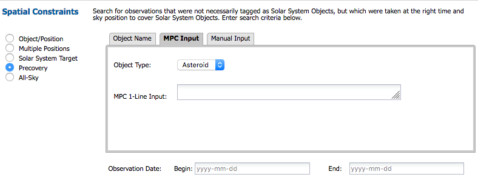
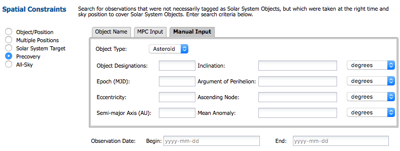
The standard six orbital elements for asteroid are
eccentricity, semimajor axis, mean anomaly, inclination, longitude
of the ascending node, and argument of perihelion. For comets,
the elements are eccentricity, perihelion distance, time of
perihelion passage, inclination, longitude of the ascending node, and
argument of perihelion. Notice that for comets, perihelion
distance is used instead of semimajor axis and time
of perihelion passage is used instead of mean anomaly.
The reason for replacing these two parameters is to allow for cases
where long period comets have a parabolic or hyperbolic orbit.
A good description of the orbital parameters is given in JPL's Solar System
Dynamics website  .
.
You can search for objects by either inputting the orbital parameters
by hand or by using a properly-formatted Minor Planet Center input
string. This latter option allows the user to cut-and-paste a line
directly from a table of orbital elements in MPC Format  into the search field. There are a
number of orbital element tables available at the MPC website, for
example, observable
NEO
into the search field. There are a
number of orbital element tables available at the MPC website, for
example, observable
NEO  and observable comets
and observable comets  . The complete list of minor
planets can be found at the MPC Orbit (MPCORB) Database
. The complete list of minor
planets can be found at the MPC Orbit (MPCORB) Database  .
.
Information on the format of the element tables is given by
following sites: minor planet format  and comet format
and comet format  .
.
Asteroid: Icarus:
| Designation | H | G | Epoch | M | w | Node | i | e | n | a |
| 01566 | 16.9 | 0.15 | K1128 | 78.13687 | 31.35339 | 88.02734 | 22.82772 | 0.8268277 | 0.88069351 | 1.0779191 |
Comet: C/2010 A4 (Siding Spring):
| Name/Desig | Tp | q | e | w | Node | i | Epoch | H | G | Name |
| CK10A040 | 2010 10 8.7896 | 2.738033 | 0.990439 | 271.6989 | 346.6856 | 96.7301 | 20110208 | 12.5 | 4.0 | C/2010 A4 (Siding Spring) |
Asteroid, truly one line input that can be copied into the search form:
00001 3.53 0.15 K20CH 205.54543 73.72487 80.27236 10.58790 0.0781685 0.21424211 2.7660891 0 E2021-B10 7277 118 1801-2020 0.51 M-v 30k Pan 0000 (1) Ceres 20201118Comet, truly one line input that can be copied into the search form :
CK13X010 2016 04 19.4301 1.324203 1.000478 165.1818 131.5699 163.1947 20210203 10.5 2.0 C/2013 X1 (PANSTARRS) MPC111767However, be cautious about using one-line ephemerides for comets, as non-gravitational forces can render them irrelevant rapidly. Searching by object name (C/2013 X1 in this case) is more likely to return results.
Observation Date (Begin and End):
You may provide a time baseline over which the search should be constrained. If left blank, it searches the entire SOFIA archve. Requests over long time baselines can take a long time. You can make a request that takes so much time that it times out, and you get no search results. In order to shorten search times, ask it to search over a smaller time baseline. The SOFIA data volume grows ever bigger, so searching the entire archive takes longer and longer.
The reason you might want this "all sky" option is because you can, e.g., retrieve all of the observations associated with a program that has observations all over the sky, or return all of the observations associated with a mission (flight), or all of the FORCAST observations. In order to use sensibly the "all sky" option in this fashion, though, you should impose additional constraints (see below). Click on the arrows to expand any of those searches in the search window.
All options do not have to be populated to do a search.
Options here can be combined with additional constraints under any other category.
Click on the arrow to expand the options for this search. You can constrain this search using the Primary Investigator or Plan ID.
Both options do not have to be populated to do a search.
Note: The PI search is somewhat flexible. If Jane Q. Astronomer submitted a proposal where she entered her name as "Jane Q. Astronomer," then you can find her program by searching on "Jane" or or "Jan" or "Astronomer" or "Astron." (Note that you do not need a wildcard ["*"] character to search on partial strings.)
Click on the arrow to expand the options for this search. You can limit the search to be all the data associated with a Mission ID, AOR ID, Plan ID, or observation date range. (For a list of dates corresponding to SOFIA Observing Cycles, see the Overview section.)
Searches over large date ranges will take more time.
All options do not have to be populated to do a search.
Instrument constraints dynamically change in response to the value chose in the pull-down in this section of the search screen. By choosing a different pulldown, your available choices change to reflect the possible values in instrument constraints for that instrument.
Depending on the instrument, you can ask for any configuration, or different spectral elements, wavelength ranges, etc.
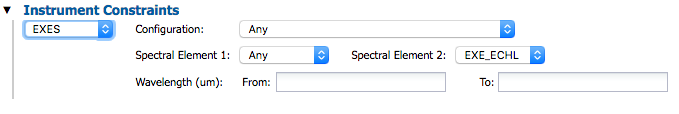
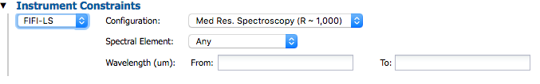
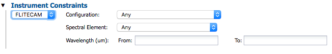
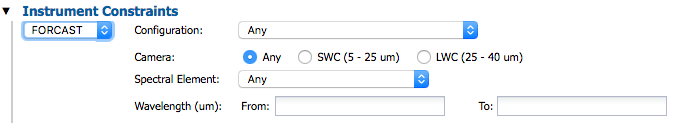
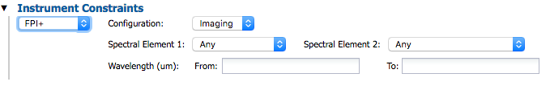
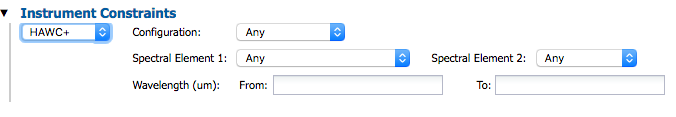
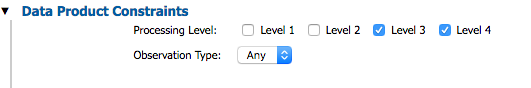
You can specify whether you want observations of a particular object ("object" pulldown option), as opposed to calibration data, or just retrieve all data.
Observation type can be :